Correction factors in shorts for estimation using split times
Source: vignettes/sprint-corrections.Rmd
sprint-corrections.RmdTo explain the use of correction factors in shorts package functions, let’s consider the following example. Imagine we have an athlete, John, with the following true short sprint characteristics: maximum sprinting speed (MSS) of 8.5\(m/s\) and maximum acceleration (MAC) of 7.5 \(m/s^2\). Since TAU (or relative acceleration) is equal to \(MSS \;/\; MAC\), in this case that is 1.133. Let’s generate John’s sprint kinematics during 40m sprint from his known and true characteristics:
library(shorts) library(tidyverse) set.seed(1667) john_MSS <- 8.5 john_MAC <- 7.5 john_TAU <- john_MSS / john_MAC john_kinematics <- tibble( name = "John", distance = seq(0, 40, length.out = 10^4), time = shorts::predict_time_at_distance(distance, john_MSS, john_TAU), velocity = shorts::predict_velocity_at_distance(distance, john_MSS, john_TAU), acceleration = shorts::predict_acceleration_at_distance(distance, john_MSS, john_TAU), power = velocity * acceleration )
Now we can plot this against time and distance. Let’s plot against distance first:
john_kinematics_per_distance <- john_kinematics %>% gather("metric", "value", -name, -distance) ggplot(john_kinematics_per_distance, aes(x = distance, y = value, color = name)) + theme_minimal() + geom_line(alpha = 0.8) + facet_wrap(~metric, scales = "free_y") + ylab(NULL)
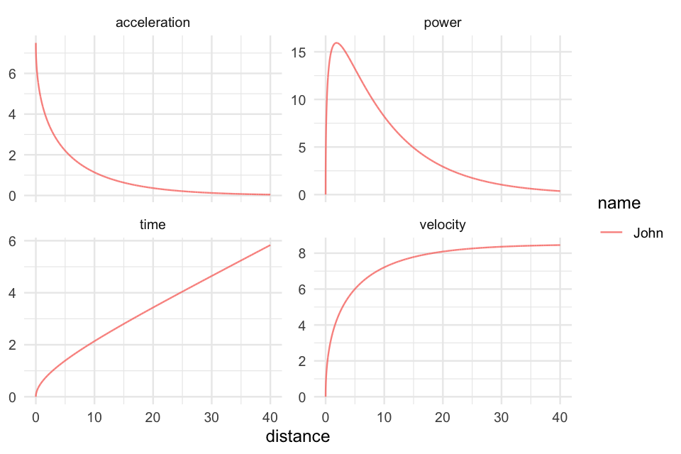
And finally against time:
john_kinematics_per_time <- john_kinematics %>% gather("metric", "value", -name, -time) ggplot(john_kinematics_per_time, aes(x = time, y = value, color = name)) + theme_minimal() + geom_line(alpha = 0.8) + facet_wrap(~metric, scales = "free_y") + ylab(NULL)
Now, imagine John has an evil twin brother Jack (hint: this is counter-factual reasoning often implemented in theory of measurement since it is damn hard to repeat everything under exactly the same conditions, unless of course, we talk about simulation as in here). Jack is completely the same as John (in terms of his sprint characteristics), but he plays soccer and that makes him a bit sneaky. So, Jack, sneaky as he is, decided to move slightly behind the first timing game (the gate at 0m which is responsible to starting the timer) and use body rocking motion. John, on the other hand, being a good twin brother as he is, perform starts in completely stand-still manner and exactly at the first timing gate (we have seen his sprint kinematics). This scenario is depicted on the figure below:

Let’s see what will happen with Jack’s kinematics. Since they are equal, we just need to deduct distance and time it take to cover those 0.5m that Jack used:
jack_kinematics <- john_kinematics jack_kinematics <- jack_kinematics %>% # Remove those first 0.5m filter(distance >= 0.5) %>% # Now deduct time and distance mutate( distance = distance - min(distance), time = time - min(time), # And rename the athlete name = "Jack" )
Now we can compare them by merging the two data frames and plot kinematics per distance and per time:
sprint_kinematics <- rbind( john_kinematics, jack_kinematics ) sprint_kinematics$name <- factor( sprint_kinematics$name, levels = c("John", "Jack") )
kinematics_per_distance <- sprint_kinematics %>% gather("metric", "value", -name, -distance) ggplot(kinematics_per_distance, aes(x = distance, y = value, color = name)) + theme_minimal() + geom_line(alpha = 0.8) + facet_wrap(~metric, scales = "free_y") + ylab(NULL)
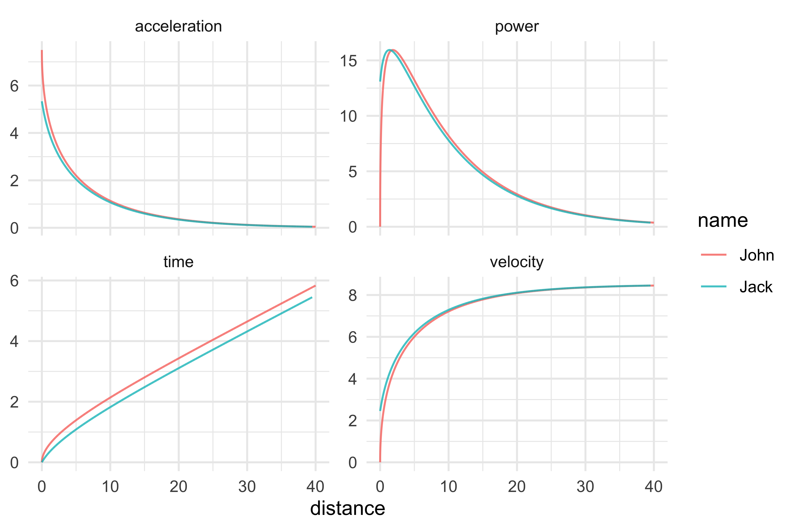
kinematics_per_time <- sprint_kinematics %>% gather("metric", "value", -name, -time) ggplot(kinematics_per_time, aes(x = time, y = value, color = name)) + theme_minimal() + geom_line(alpha = 0.8) + facet_wrap(~metric, scales = "free_y") + ylab(NULL)
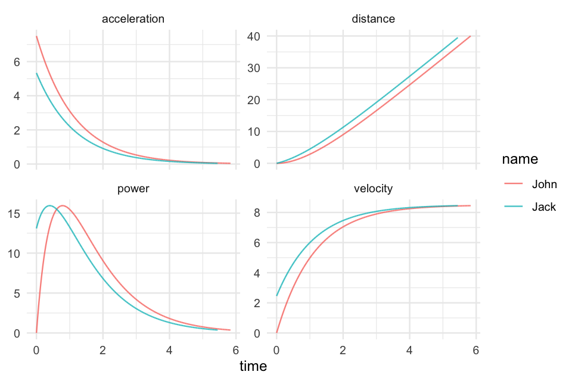
The differences look obvious since we have the power of this theoretical simulation, but in the real life, we often use distances at 5, 10, 20, 30 and/or 40m and this cheating (or better yet, different starting position) cannot be seen so easily.
So let’s rerun this, but using the common sprint distances of 5, 10, 20, 30, and 40m. To generate data for Jack, we need to add 0.5m to sprint distances, calculate times, and deduct time it take to cover first 0.5m that doesn’t trigger timing:
sprint_distance <- c(5, 10, 20, 30, 40) john_split_kinematics <- tibble( name = "John", distance = sprint_distance, time = shorts::predict_time_at_distance(distance, john_MSS, john_TAU) ) john_split_kinematics #> # A tibble: 5 x 3 #> name distance time #> <chr> <dbl> <I<dbl>> #> 1 John 5 1.39 #> 2 John 10 2.14 #> 3 John 20 3.43 #> 4 John 30 4.64 #> 5 John 40 5.83 jack_split_kinematics <- tibble( name = "Jack", distance = sprint_distance, true_distance = distance + 0.5, true_time = shorts::predict_time_at_distance(true_distance, john_MSS, john_TAU), `time_05m` = shorts::predict_time_at_distance(0.5, john_MSS, john_TAU), time = true_time - `time_05m` ) jack_split_kinematics #> # A tibble: 5 x 6 #> name distance true_distance true_time time_05m time #> <chr> <dbl> <dbl> <I<dbl>> <I<dbl>> <I<dbl>> #> 1 Jack 5 5.5 1.47 0.386 1.08 #> 2 Jack 10 10.5 2.21 0.386 1.82 #> 3 Jack 20 20.5 3.49 0.386 3.11 #> 4 Jack 30 30.5 4.70 0.386 4.32 #> 5 Jack 40 40.5 5.89 0.386 5.51
Let’s see how this cheating affects estimated sprint parameters. This is very useful exercises since we know the true parameters, and now we can see how they differ:
# Since this is a perfect simulation and stats::nls will complain # we need to add very small noise, or measurement error john_split_kinematics$time <- john_split_kinematics$time + rnorm(length(sprint_distance), 0, 10^-5) jack_split_kinematics$time <- jack_split_kinematics$time + rnorm(length(sprint_distance), 0, 10^-5) john_split_params <- with( john_split_kinematics, shorts::model_using_splits(distance, time) ) jack_split_params <- with( jack_split_kinematics, shorts::model_using_splits(distance, time) ) split_parameters <- rbind( unlist(john_split_params$parameters), unlist(jack_split_params$parameters) ) rownames(split_parameters) <- c("John", "Jack") round(split_parameters, 2) #> MSS TAU MAC PMAX time_correction distance_correction #> John 8.50 1.13 7.50 15.94 0 0 #> Jack 8.14 0.62 13.15 26.77 0 0
As can be seen from the output above, estimated sprint parameters are different. Particularly large difference can be seen for TAU, MAC, and PMAX. Let’s see the difference in model fit (please note that we have added very small noise to the data to allow for the model to be fitted):
split_model_fit <- rbind( unlist(john_split_params$model_fit), unlist(jack_split_params$model_fit) ) rownames(split_model_fit) <- c("John", "Jack") round(split_model_fit, 3) #> RSE R_squared minErr maxErr maxAbsErr RMSE MAE MAPE #> John 0.000 1 0.000 0.000 0.000 0.00 0.000 0.000 #> Jack 0.039 1 -0.037 0.049 0.049 0.03 0.027 1.378
As expected, perfect model fit for John (since we generated his performance from the model itself), and some error involved with Jack. Let’s see visually these differences (assuming they both had the same proper start):
john_split_kinematics$predicted_time <- shorts::predict_time_at_distance( sprint_distance, john_split_params$parameters$MSS, john_split_params$parameters$TAU ) jack_split_kinematics$predicted_time <- shorts::predict_time_at_distance( sprint_distance, jack_split_params$parameters$MSS, jack_split_params$parameters$TAU ) split_kinematics <- rbind( john_split_kinematics, select(jack_split_kinematics, name, distance, time, predicted_time) ) split_kinematics$name <- factor( split_kinematics$name, levels = c("John", "Jack") ) split_kinematics$difference <- with( split_kinematics, predicted_time - time ) ggplot(split_kinematics, aes(x = distance, y = difference, color = name)) + theme_minimal() + geom_point(alpha = 0.8) + geom_line(alpha = 0.8) + ylab("Predicted - observed")
As can be seen from the figure above, at particular distance the residuals (the difference between model prediction and observation) are different. This is because the model is ill defined assuming no cheating for Jack.
But how do we fix this? There are few options. In ideal scenario, we should know the distance shift (i.e., 0.5m in our case) and time it takes to cover it. This of course depends on the true parameters (given the model) and it is something we cannot know in real life. Other option is to use correction factor, in a simple form of time_correction which we simply add to split times (Haugen, Tønnessen, and Seiler 2012; Haugen, Breitschädel, and Seiler 2019). time_correction is usually around 0.15 - 0.3seconds, but this depends on the type of the start, acceleration abilities of the athletes and so forth. It does represent a good and useful rule of a thumb.
If you look at Jack split kinematics table, you can notice the time it takes to cover that 0.5m (time_05m in the table). This is similar to time_correction, but it is not the same, since we have deducted known distance of 0.5 as well. Let’s use simple heuristic, of 0.3seconds that needs to be added to out split times. Function shorts::model_using_splits allows for using such a correction factor:
jack_params_with_correction <- with( jack_split_kinematics, shorts::model_using_splits(distance, time, time_correction = 0.3) ) unlist(jack_params_with_correction$parameters) #> MSS TAU MAC PMAX #> 8.522139 1.116450 7.633248 16.262899 #> time_correction distance_correction #> 0.300000 0.000000
As can be seen, this is much better (very close to John’s profile). Here are the model fit metrics:
unlist(jack_params_with_correction$model_fit) #> RSE R_squared minErr maxErr maxAbsErr RMSE #> 0.004669167 0.999995356 -0.006676947 0.003387867 0.006676947 0.003616722 #> MAE MAPE #> 0.003033239 0.179724847
Let’s check the prediction residuals now:
jack_split_kinematics_corrected <- select(jack_split_kinematics, name, distance, time) jack_split_kinematics_corrected$predicted_time <- shorts::predict_time_at_distance( sprint_distance, jack_params_with_correction$parameters$MSS, jack_params_with_correction$parameters$TAU, time_correction = 0.3 ) jack_split_kinematics_corrected$difference <- with( jack_split_kinematics_corrected, predicted_time - time ) jack_split_kinematics_corrected$name <- "Jack w/0.3s correction" split_kinematics <- rbind( split_kinematics, jack_split_kinematics_corrected ) ggplot(split_kinematics, aes(x = distance, y = difference, color = name)) + theme_minimal() + geom_point(alpha = 0.8) + geom_line(alpha = 0.8) + ylab("Predicted - observed")

Not only the estimated parameters (i.e., TAU and MSS) are much closer to true parameters, the model predictions are much better as indicated with the above graph.
Additionally, we can actually estimate time_correction form the observed split times, together with estimating MSS and TAU parameters (as we have done so far). The engine underneath the shorts package is nls function, that perform non-linear least squares regression. Rather than using shorts::model_using_splits function (which estimates two parameters: MSS and TAU), we can use shorts::model_using_splits_with_time_correction (which estimates three parameters: MSS, TAU, an time_correction):
jack_param_with_estimated_time_correction <- with( jack_split_kinematics, shorts::model_using_splits_with_time_correction(distance, time) ) unlist(jack_param_with_estimated_time_correction$parameters) #> MSS TAU MAC PMAX #> 8.4736411 1.0627127 7.9735952 16.8913459 #> time_correction distance_correction #> 0.2720356 0.0000000
Here are the model fit metrics:
unlist(jack_param_with_estimated_time_correction$model_fit) #> RSE R_squared minErr maxErr maxAbsErr #> 0.0016131780 0.9999995979 -0.0009223064 0.0016968979 0.0016968979 #> RMSE MAE MAPE #> 0.0010202634 0.0009375994 0.0447416446
Let’s check the prediction residuals now:
jack_split_kinematics_corrected_est <- select(jack_split_kinematics, name, distance, time) jack_split_kinematics_corrected_est$predicted_time <- shorts::predict_time_at_distance( sprint_distance, jack_param_with_estimated_time_correction$parameters$MSS, jack_param_with_estimated_time_correction$parameters$TAU, jack_param_with_estimated_time_correction$parameters$time_correction ) jack_split_kinematics_corrected_est$difference <- with( jack_split_kinematics_corrected_est, predicted_time - time ) jack_split_kinematics_corrected_est$name <- "Jack w/est. correction" split_kinematics <- rbind( split_kinematics, jack_split_kinematics_corrected_est ) ggplot(split_kinematics, aes(x = distance, y = difference, color = name)) + theme_minimal() + geom_point(alpha = 0.8) + geom_line(alpha = 0.8) + ylab("Predicted - observed")
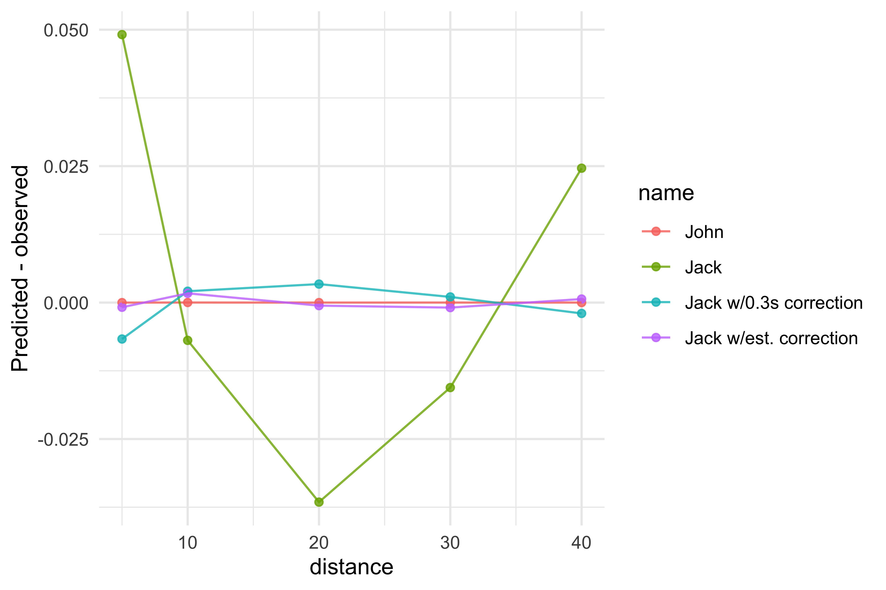
The model prediction is now almost perfect. To make this model perfect, we would need to estimate distance_correction as well (the one we have used to generate Jack’s data in the first place). This is done with shorts::model_using_splits_with_corrections which estimated 4 parameters: MSS, TAU, time_correction and distance_correction:
jack_param_with_estimated_distance_correction <- with( jack_split_kinematics, shorts::model_using_splits_with_corrections(distance, time) ) unlist(jack_param_with_estimated_distance_correction$parameters) #> MSS TAU MAC PMAX #> 8.4999193 1.1331547 7.5011114 15.9397104 #> time_correction distance_correction #> 0.3855927 0.4988533
And model fit metrics:
unlist(jack_param_with_estimated_distance_correction$model_fit) #> RSE R_squared minErr maxErr maxAbsErr #> 2.389470e-05 1.000000e+00 -1.499921e-05 1.635740e-05 1.635740e-05 #> RMSE MAE MAPE #> 1.068603e-05 9.030868e-06 2.894859e-04
This 4-parameters model was able to fully recovery Jack’s characteristics and predict his split times. Let’s check the residuals:
jack_split_kinematics_corrected_est_dist <- select(jack_split_kinematics, name, distance, time) jack_split_kinematics_corrected_est_dist$predicted_time <- shorts::predict_time_at_distance( sprint_distance, jack_param_with_estimated_distance_correction$parameters$MSS, jack_param_with_estimated_distance_correction$parameters$TAU, jack_param_with_estimated_distance_correction$parameters$time_correction, jack_param_with_estimated_distance_correction$parameters$distance_correction ) jack_split_kinematics_corrected_est_dist$difference <- with( jack_split_kinematics_corrected_est_dist, predicted_time - time ) jack_split_kinematics_corrected_est_dist$name <- "Jack w/est. distance correction" split_kinematics <- rbind( split_kinematics, jack_split_kinematics_corrected_est_dist ) ggplot(split_kinematics, aes(x = distance, y = difference, color = name)) + theme_minimal() + geom_point(alpha = 0.8) + geom_line(alpha = 0.8) + ylab("Predicted - observed")
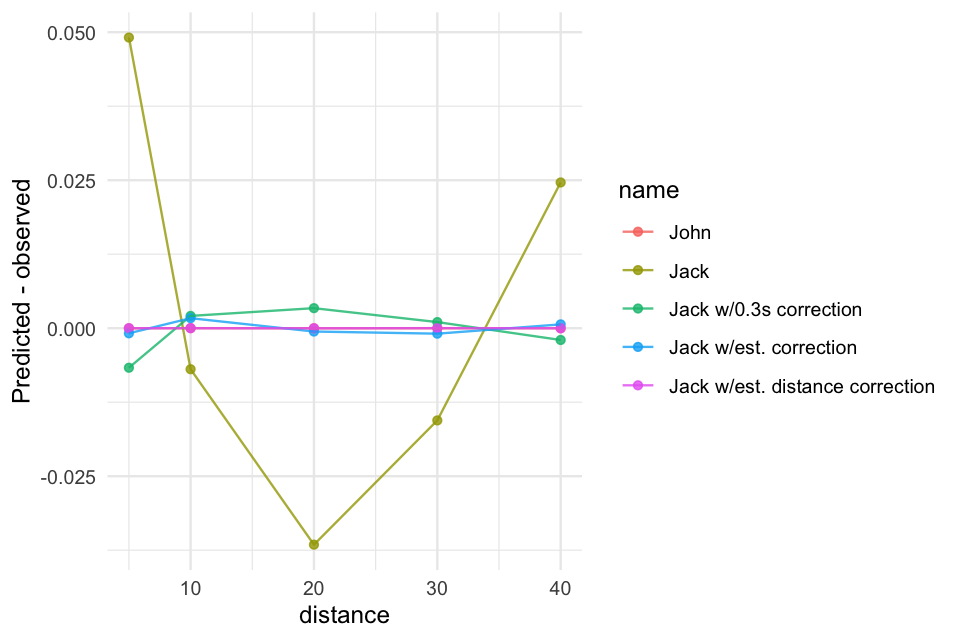
To provide additional example, let’s use the simulated 40m kinematic data from the beginning of this vignette and see how the kinematics differ between the models:
# Add small noise to the data so the model with distance and time corrected can be fitted jack_kinematics$time <- jack_kinematics$time + rnorm(nrow(jack_kinematics), 0, 10^-5) simple_model <- with( jack_kinematics, shorts::model_using_splits(distance, time) ) simple_model_kinematics <- jack_kinematics %>% mutate( name = "simple model", time = shorts::predict_time_at_distance( distance, simple_model$parameters$MSS, simple_model$parameters$TAU ), velocity = shorts::predict_velocity_at_distance( distance, simple_model$parameters$MSS, simple_model$parameters$TAU ), acceleration = shorts::predict_acceleration_at_distance( distance, simple_model$parameters$MSS, simple_model$parameters$TAU ), power = velocity * acceleration ) # ----------------------------------- simple_model_corrected <- with( jack_kinematics, shorts::model_using_splits(distance, time, time_correction = 0.3) ) simple_model_corrected_kinematics <- jack_kinematics %>% mutate( name = "simple model w/0.3s correction", time = shorts::predict_time_at_distance( distance, simple_model_corrected$parameters$MSS, simple_model_corrected$parameters$TAU, time_correction = 0.3 ), velocity = shorts::predict_velocity_at_distance( distance, simple_model_corrected$parameters$MSS, simple_model_corrected$parameters$TAU, time_correction = 0.3 ), acceleration = shorts::predict_acceleration_at_distance( distance, simple_model_corrected$parameters$MSS, simple_model_corrected$parameters$TAU, time_correction = 0.3 ), power = velocity * acceleration ) # ----------------------------------- estimate_time_correction <- with( jack_kinematics, shorts::model_using_splits_with_time_correction(distance, time) ) estimate_time_correction_kinematics <- jack_kinematics %>% mutate( name = "Model w/time correction", time = shorts::predict_time_at_distance( distance, estimate_time_correction$parameters$MSS, estimate_time_correction$parameters$TAU, estimate_time_correction$parameters$time_correction ), velocity = shorts::predict_velocity_at_distance( distance, estimate_time_correction$parameters$MSS, estimate_time_correction$parameters$TAU, estimate_time_correction$parameters$time_correction ), acceleration = shorts::predict_acceleration_at_distance( distance, estimate_time_correction$parameters$MSS, estimate_time_correction$parameters$TAU, estimate_time_correction$parameters$time_correction ), power = velocity * acceleration ) # ----------------------------------- # Remove zero from the data, otherwise model will complain jack_kinematics_filtered <- jack_kinematics %>% filter(distance > 0.1) estimate_corrections <- with( jack_kinematics_filtered, shorts::model_using_splits_with_corrections(distance, time) ) estimate_corrections_kinematics <- jack_kinematics_filtered %>% mutate( name = "Model w/time & distance correction", time = shorts::predict_time_at_distance( distance, estimate_corrections$parameters$MSS, estimate_corrections$parameters$TAU, estimate_corrections$parameters$time_correction, estimate_corrections$parameters$distance_correction ), velocity = shorts::predict_velocity_at_distance( distance, estimate_corrections$parameters$MSS, estimate_corrections$parameters$TAU, estimate_corrections$parameters$time_correction, estimate_corrections$parameters$distance_correction ), acceleration = shorts::predict_acceleration_at_distance( distance, estimate_corrections$parameters$MSS, estimate_corrections$parameters$TAU, estimate_corrections$parameters$time_correction, estimate_corrections$parameters$distance_correction ), power = velocity * acceleration ) # ----------------------------------------------------- # Plot sprint_kinematics <- rbind( jack_kinematics, simple_model_kinematics, simple_model_corrected_kinematics, estimate_time_correction_kinematics, estimate_corrections_kinematics ) kinematics_per_distance <- sprint_kinematics %>% gather("metric", "value", -name, -distance) ggplot(kinematics_per_distance, aes(x = distance, y = value, color = name)) + theme_minimal() + geom_line(alpha = 0.8) + facet_wrap(~metric, scales = "free_y") + ylab(NULL) + theme(legend.text = element_text(size = 6))
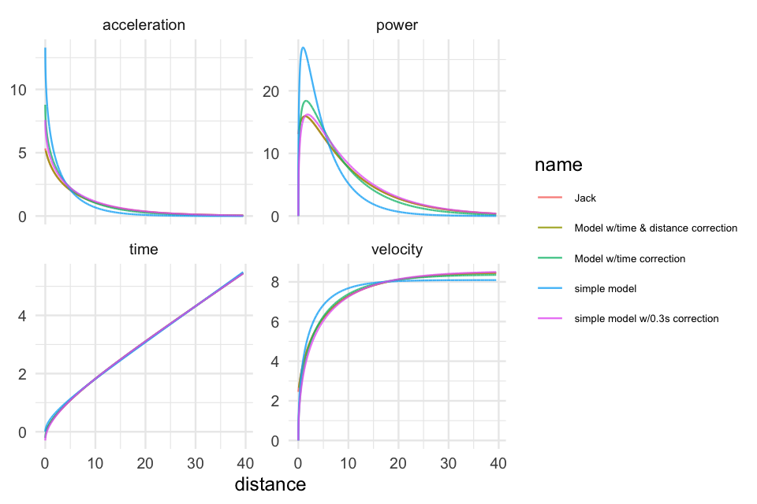
kinematics_per_time <- sprint_kinematics %>% gather("metric", "value", -name, -time) ggplot(kinematics_per_time, aes(x = time, y = value, color = name)) + theme_minimal() + geom_line(alpha = 0.8) + facet_wrap(~metric, scales = "free_y") + ylab(NULL) + theme(legend.text = element_text(size = 6))
Although it cannot be seen from these images, model with time and distance correction is completely over the true model.
Additional simulation
To showcase effects of cheating on the sprint start on estimated MSS and TAU I will provide additional simulation. In this simulation, cheating refers to starting behind the initial timing gate. This distance will vary from 0 to 1 meter. Estimation models involve model without any correction, model with 0.3 second adjustment, model with time_correction and model with both time_correction and distance_correction.
time_correction <- 0.3 # Wrapper functions ind_model_wrapper <- function(data, ...) { sprint_mod <- shorts::model_using_splits( distance = data$distance, time = data$time, ... ) data.frame( sprint_mod$parameters ) } ind_model_wrapper_with_time_correction <- function(data, ...) { sprint_mod <- shorts::model_using_splits( distance = data$distance, time = data$time, time_correction = time_correction, ... ) data.frame( sprint_mod$parameters ) } ind_model_wrapper_with_time_correction_estimation <- function(data, ...) { sprint_mod <- shorts::model_using_splits_with_time_correction( distance = data$distance, time = data$time, ... ) data.frame( sprint_mod$parameters ) } ind_model_wrapper_with_correction_estimations <- function(data, ...) { sprint_mod <- shorts::model_using_splits_with_corrections( distance = data$distance, time = data$time, ... ) data.frame( sprint_mod$parameters ) } # ----------------------------------------------- set.seed(1667) sim_df <- expand_grid( simulation = 1:1, true_MSS = c(7, 8, 9), true_TAU = c(0.6, 0.75, 0.9), cheating_distance = seq(0, 1, length.out = 10), distance = c(5, 10, 15, 20, 30, 40) ) %>% mutate( true_MAC = true_MSS / true_TAU, true_PMAX = (true_MSS * true_MAC) / 4, true_distance = distance + cheating_distance, cheating_time = predict_time_at_distance(cheating_distance, true_MSS, true_TAU), true_time = predict_time_at_distance(true_distance, true_MSS, true_TAU), time = true_time - cheating_time, # Add small noise to allow fitting time = time + rnorm(n(), 0, 10^-5) ) ind_model <- sim_df %>% group_by(simulation, cheating_distance, true_MSS, true_TAU) %>% do(ind_model_wrapper(.)) %>% mutate(time_correction = 0) ind_model_with_time_correction <- sim_df %>% group_by(simulation, cheating_distance, true_MSS, true_TAU) %>% do(ind_model_wrapper_with_time_correction(.)) %>% mutate(time_correction = time_correction) ind_model_with_time_correction_estimation <- sim_df %>% group_by(simulation, cheating_distance, true_MSS, true_TAU) %>% do(ind_model_wrapper_with_time_correction_estimation(., control = nls.control(tol = 0.1))) ind_model_with_time_and_distance_correction_estimation <- sim_df %>% group_by(simulation, cheating_distance, true_MSS, true_TAU) %>% do(ind_model_wrapper_with_correction_estimations(., control = nls.control(tol = 0.1))) combined_parameters <- rbind( data.frame( model = "norm", ind_model ), data.frame( model = "norm+time correction", ind_model_with_time_correction ), data.frame( model = "norm+time estimation", ind_model_with_time_correction_estimation ), data.frame( model = "norm+time+dist estimation", ind_model_with_time_and_distance_correction_estimation)) # Combine sim_df <- left_join( combined_parameters, sim_df, by = c("simulation", "cheating_distance", "true_MSS", "true_TAU") ) %>% mutate( pred_time = predict_time_at_distance(distance, MSS, TAU, time_correction), sim_id = paste0(simulation, "-", cheating_distance) ) head(sim_df) #> model simulation cheating_distance true_MSS true_TAU MSS TAU #> 1 norm 1 0 7 0.6 7.000026 0.6000122 #> 2 norm 1 0 7 0.6 7.000026 0.6000122 #> 3 norm 1 0 7 0.6 7.000026 0.6000122 #> 4 norm 1 0 7 0.6 7.000026 0.6000122 #> 5 norm 1 0 7 0.6 7.000026 0.6000122 #> 6 norm 1 0 7 0.6 7.000026 0.6000122 #> MAC PMAX time_correction distance_correction distance true_MAC #> 1 11.66647 20.41641 0 0 5 11.66667 #> 2 11.66647 20.41641 0 0 10 11.66667 #> 3 11.66647 20.41641 0 0 15 11.66667 #> 4 11.66647 20.41641 0 0 20 11.66667 #> 5 11.66647 20.41641 0 0 30 11.66667 #> 6 11.66647 20.41641 0 0 40 11.66667 #> true_PMAX true_distance cheating_time true_time time pred_time #> 1 20.41667 5 0 1.238077.... 1.238093.... 1.238083.... #> 2 20.41667 10 0 2.007430.... 2.007425.... 2.007435.... #> 3 20.41667 15 0 2.736586.... 2.736594.... 2.736589.... #> 4 20.41667 20 0 3.455249.... 3.455249.... 3.455250.... #> 5 20.41667 30 0 4.885539.... 4.885529.... 4.885535.... #> 6 20.41667 40 0 6.314269.... 6.314264.... 6.314260.... #> sim_id #> 1 1-0 #> 2 1-0 #> 3 1-0 #> 4 1-0 #> 5 1-0 #> 6 1-0
Now we can plot effects on estimated MSS:
sim_df <- sim_df %>% mutate( true_MSS_text = factor(paste0("MSS = ", true_MSS)), true_TAU_text = factor(paste0("TAU = ", true_TAU)) ) ggplot( sim_df, aes(x = cheating_distance, y = MSS, color = model) ) + theme_minimal(8) + geom_hline(aes(yintercept = true_MSS), linetype = "dashed", color = "grey") + geom_line() + facet_grid(true_MSS_text~true_TAU_text, scales = "free_y") + theme(legend.text = element_text(size = 6)) + ylab("Estimated MSS") + xlab("Cheating distance (m)")
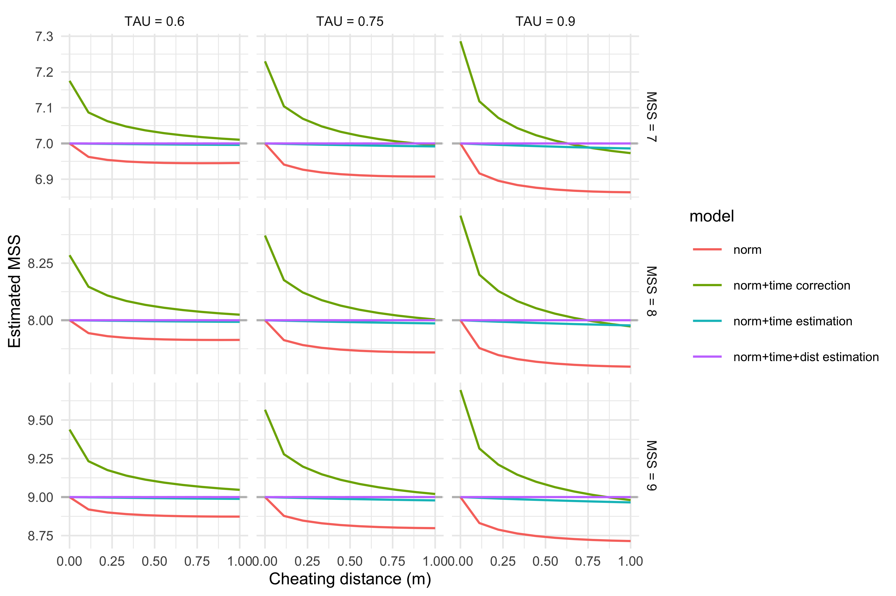
Estimated TAU:
ggplot( sim_df, aes(x = cheating_distance, y = TAU, color = model) ) + theme_minimal(8) + geom_hline(aes(yintercept = true_TAU), linetype = "dashed", color = "grey") + geom_line() + facet_grid(true_MSS_text~true_TAU_text, scales = "free") + theme(legend.text = element_text(size = 6)) + ylab("Estimated TAU") + xlab("Cheating distance (m)")
Estimated MAC:
ggplot( sim_df, aes(x = cheating_distance, y = MAC, color = model) ) + theme_minimal(8) + geom_hline(aes(yintercept = true_MAC), linetype = "dashed", color = "grey") + geom_line() + facet_grid(true_MSS_text~true_TAU_text, scales = "free") + theme(legend.text = element_text(size = 6)) + ylab("Estimated MAC") + xlab("Cheating distance (m)")
And finally estimated PMAX:
ggplot( sim_df, aes(x = cheating_distance, y = PMAX, color = model) ) + theme_minimal(8) + geom_hline(aes(yintercept = true_PMAX), linetype = "dashed", color = "grey") + geom_line() + facet_grid(true_MSS_text~true_TAU_text, scales = "free") + theme(legend.text = element_text(size = 6)) + ylab("Estimated PMAX") + xlab("Cheating distance (m)")
As can be seen from the simulations, model with time and distance correction correctly estimated all parameters, while model with time_correction only showed second best prediction. Other two models were biased when cheating was involved.
In this simulation there was not measurement error involved, which should also be simulated as well as the effect of different number of timing gates and their positions.
Word of caution
The estimation of time_correction and distance_correction are ideas that are not well researched. Further simulation studies to estimate validity of those models, as well as to calculate simple heuristic correction to be used in practical settings are left to be done.
References
Haugen, Thomas A., Felix Breitschädel, and Stephen Seiler. 2019. “Sprint Mechanical Variables in Elite Athletes: Are Force-Velocity Profiles Sport Specific or Individual?” Edited by Leonardo A. Peyré-Tartaruga. PLOS ONE 14 (7): e0215551. https://doi.org/10.1371/journal.pone.0215551.
Haugen, Thomas A, Espen Tønnessen, and Stephen K Seiler. 2012. “The Difference Is in the Start: Impact of Timing and Start Procedure on Sprint Running Performance:” Journal of Strength and Conditioning Research 26 (2): 473–79. https://doi.org/10.1519/JSC.0b013e318226030b.